REPAIR INSTRUCTION > PRECAUTION |
| 1.BASIC REPAIR HINT |
HINTS ON OPERATIONS
| 1 | Attire |
|
| 2 | Vehicle protection | Prepare a grille cover, fender cover, seat cover and floor mat before starting the operation. |
| 3 | Safe operation |
|
| 4 | Preparation of tools and measuring gauge | Before starting the operation, prepare a tool stand, SST, gauge, oil and parts for replacement. |
| 5 | Removal and installation, disassembly and assembly operations |
|
| 6 | Removed parts |
|
JACKING UP AND SUPPORTING VEHICLE
Care must be taken when jacking up and supporting the vehicle. Be sure to lift and support the vehicle at the proper locations.
| 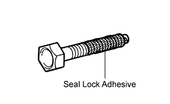 |
PRECOATED PARTS
Precoated parts are bolts and nuts that are coated with a seal lock adhesive at the factory.
If a precoated part is retightened, loosened or moved in any way, it must be recoated with the specified adhesive.
When reusing a precoated part, clean off the old adhesive and dry the part with compressed air. Then apply new seal lock adhesive appropriate to that part.
Some seal lock agents harden slowly. You may have to wait for the seal lock adhesive to harden.
GASKETS
When necessary, use a sealer on gaskets to prevent leaks.
BOLTS, NUTS AND SCREWS
Carefully follow all the specifications for tightening torques. Always use a torque wrench.
| 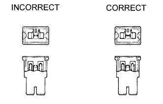 |
FUSES
When inspecting a fuse, check that the wire of the fuse is not broken.
When replacing fuses, be sure that the new fuse has the correct amperage rating. Do not exceed the rating or use one with a lower rating.
| Illustration | Symbol | Part Name | Abbreviation |
| 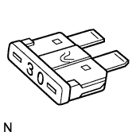 | 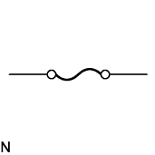 | FUSE | FUSE |
| 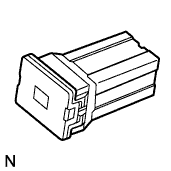 | 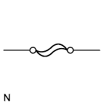 | MEDIUM CURRENT FUSE | M-FUSE |
 | 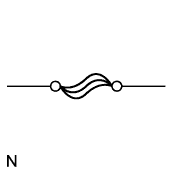 | HIGH CURRENT FUSE | H-FUSE |
 |  | FUSIBLE LINK | FL |
 |  | CIRCUIT BREAKER | CB |
CLIPS
The removal and installation methods of typical clips used for vehicle body parts are shown in the table below.
| Shape (Example) | Illustration | Procedures |
 | 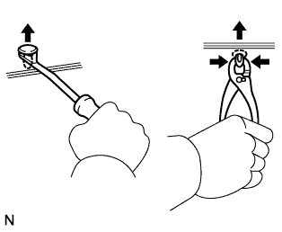 |
|
| 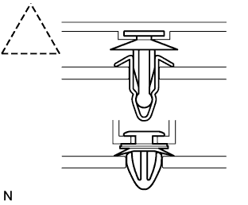 |  |
|
| 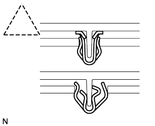 |  |
|
 |  |
|
 |  |
|
 | 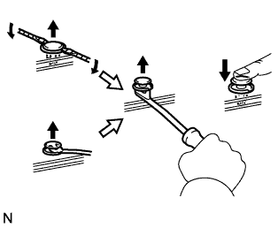 |
|
CLAWS
The removal and installation methods of typical claws used for vehicle body parts are shown in the table below.
| Shape (Example) | Illustration | Procedures |
 |  |
|
| 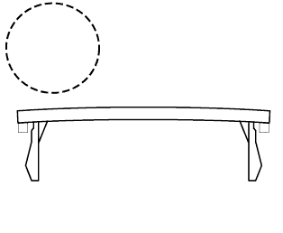 |  |
|
| 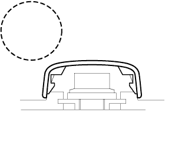 |  |
|
REMOVAL AND INSTALLATION OF VACUUM HOSES
| 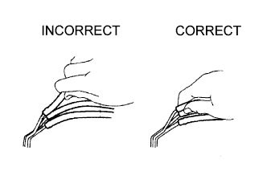 |
To disconnect a vacuum hose, pull and twist from the end of the hose. Do not pull from the middle of the hose as this may cause damage.
| 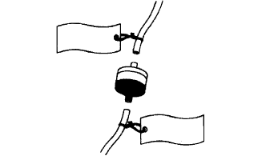 |
When disconnecting vacuum hoses, use tags to identify where they should be reconnected.
After completing any hose related repairs, double check that the vacuum hoses are properly connected. The label under the hood shows the proper layout.
When using a vacuum gauge, never force the hose onto a connector that is too large. If a hose has been stretched, it may leak air. Use a step-down adapter if necessary.
 |
TORQUE WHEN USING TORQUE WRENCH WITH EXTENSION TOOL
| 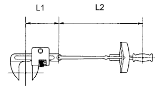 |
Use the formula below to calculate special torque values for situations where SST or an extension tool is combined with a torque wrench.
| T' | Reading of torque wrench {N*m (kgf*cm, ft.*lbf)} |
| T | Torque {N*m (kgf*cm, ft.*lbf)} |
| L1 | Length of SST or extension tool {cm (in.)} |
| L2 | Length of torque wrench {cm (in.)} |
| 2.FOR VEHICLES EQUIPPED WITH SRS AIRBAG AND FRONT SEAT OUTER BELT ASSEMBLY WITH PRETENSIONER |
GENERAL NOTICE
As malfunctions of the SRS are difficult to confirm, the Diagnostic Trouble Codes (DTCs) become the most important source of information when troubleshooting. When troubleshooting the SRS, always check the DTCs before disconnecting the battery.
Work must be started at least 90 seconds after the ignition switch is turned OFF and after the cable is disconnected from the negative (-) battery terminal.
(The SRS is equipped with a backup power source. If work is started within 90 seconds after turning the ignition switch OFF and disconnecting the cable from the negative (-) battery terminal, the SRS may deploy.
When the cable is disconnected from the negative (-) battery terminal, clock and audio system memory is erased. Before starting work, make a note of the settings of each memory system. When work is finished, reset the clock and audio system as before.)
Even in cases of a minor collision where the SRS does not deploy, the steering wheel pad, front passenger airbag assembly, front seat side airbag assembly, curtain shield airbag assembly and seat belt pretensioner should be inspected.
In minor collisions where the SRS does not deploy, the steering wheel pad, front passenger airbag assembly, front seat side airbag assembly, curtain shield airbag assembly and seat belt pretensioner should be inspected before further use of the vehicle.
Never use SRS parts from another vehicle. When replacing parts, use new parts.
Before repairs, remove the airbag sensor assemblies if impacts are likely to be applied to the sensor during repairs.
Never disassemble and attempt to repair the steering wheel pad, front passenger airbag assembly, side airbag assembly, curtain shield airbag assembly and seat belt pretensioner.
Replace the steering wheel pad, front passenger airbag assembly, front seat side airbag assembly, curtain shield airbag assembly and seat belt pretensioner if: 1) damage has occurred from being dropped, or 2) cracks, dents or other defects in the case, bracket or connector are present.
Do not directly expose the airbag sensor assemblies or airbag assemblies to hot air or flames.
Use an ohmmeter / voltmeter with high impedance (10 kΩ/V minimum) for troubleshooting electrical circuits.
Information labels are attached to the SRS components. Follow the instructions on the labels.
After work on the SRS is completed, check the SRS warning light.
SPIRAL CABLE
| 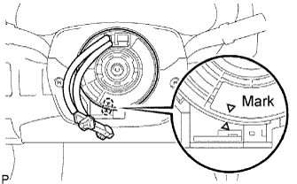 |
The steering wheel must be fitted correctly to the steering column with the spiral cable at the neutral position, as cable disconnection and other problems may occur. Refer to the information about correct installation of the steering wheel.
STEERING PAD
Always place a removed or new steering pad surface upward as shown in the illustration. Placing the horn button with the pad surface facing down could cause a serious accident if the airbag inflates. Also, do not place anything on top of the horn button.
Never measure the resistance of the airbag squib. This may cause the airbag to inflate, which could cause a serious injury.
Grease or detergents of any kind should not be applied to the horn button.
Store the horn button assembly in an area where the ambient temperature is below 93°C (200°F), the humidity is not high and there is no electrical noise.
When using electric welding anywhere on the vehicle, disconnect the airbag ECU connectors (4 pins). These connectors contain shorting springs. This feature reduces the possibility of the airbag deploying due to currents entering the squib wiring.
When disposing of the vehicle or the horn button assembly by itself, the airbag should be deployed using SST before disposal. Activate the airbag in a safe place away from electrical noise.
FRONT PASSENGER AIRBAG ASSEMBLY
Always place a removed or new front passenger airbag assembly with the pad surface facing upward as shown in the illustration. Placing the airbag assembly with the airbag inflation direction facing down could cause a serious accident if the airbag inflates.
Never measure the resistance of the airbag squib. This may cause the airbag to inflate, which could cause a serious injury.
Grease or detergents of any kind should not be applied to the front passenger airbag assembly.
Store the airbag assembly in an area where the ambient temperature is below 93°C (200°F), the humidity is not high and there is no electrical noise.
When using electric welding anywhere on the vehicle, disconnect the airbag ECU connectors (4 pins). These connectors contain shorting springs. This feature reduces the possibility of the airbag deploying due to currents entering the squib wiring.
When disposing of the vehicle or the airbag assembly unit by itself, the airbag should be deployed using SST before disposal. Activate the airbag in a safe place away from electrical noise.
CURTAIN SHIELD AIRBAG ASSEMBLY
Always place a removed or new curtain shield airbag assembly in a clear plastic bag, and keep it in a safe place.
Never measure the resistance of the airbag squib. This may cause the airbag to inflate, which could cause a serious injury.
Grease or detergents of any kind should not be applied to the curtain shield airbag assembly.
Store the airbag assembly in an area where the ambient temperature is below 93°C (200°F), the humidity is not high and there is no electrical noise.
When using electric welding anywhere on the vehicle, disconnect the airbag ECU connectors (4 pins). These connectors contain shorting springs. This feature reduces the possibility of the airbag deploying due to currents entering the squib wiring.
When disposing of a vehicle or the airbag assembly unit by itself, the airbag should be deployed using SST before disposal. Activate the airbag in a safe place away from electrical noise.
FRONT SEAT SIDE AIRBAG ASSEMBLY
Always place a removed or new front seat airbag assembly with the airbag inflation direction facing up.
Never measure the resistance of the airbag squib. This may cause the airbag to inflate, which could cause a serious injury.
Grease or detergents of any kind should not be applied to the front seat airbag assembly.
Store the airbag assembly in an area where the ambient temperature is below 93°C (200°F), the humidity is not high and there is no electrical noise.
When using electric welding anywhere on the vehicle, disconnect the airbag ECU connectors (2 pins). These connectors contain shorting springs. This feature reduces the possibility of the airbag deploying due to currents entering the squib wiring.
When disposing of a vehicle or the airbag assembly unit by itself, the airbag should be deployed using SST before disposal. Activate the airbag in a safe place away from electrical noise.
FRONT SEAT OUTER BELT ASSEMBLY WITH PRETENSIONER
Never measure the resistance of the seat outer belt. This may cause the pretensioner of the seat belt to activate, which could cause a serious injury.
Never disassemble the seat outer belt.
Never install the seat outer belt on another vehicle.
Store the seat outer belt in an area where the ambient temperature is below 80°C (176°F), the humidity is not high and there is no electrical noise.
When using electric welding anywhere on the vehicle, disconnect the airbag ECU connectors (2 pins). These connectors contain shorting springs. This feature reduces the possibility of the pretensioner deploying due to currents entering the squib wiring.
When disposing of a vehicle or the seat outer belt assembly by itself, the seat outer belt should be activated before disposal. Activate it in a safe place away from electrical noise.
As the seat outer belt is hot after the pretensioner is activated, allow some time for it to cool down sufficiently before disposal. Never apply water to try to cool down the seat outer belt.
Grease, detergents, oil or water should not be applied to the front seat outer belt.
AIRBAG SENSOR ASSEMBLY
Never reuse an airbag sensor assembly that has been involved in a collision where the SRS has deployed.
The connectors to the airbag sensor assembly should be connected or disconnected with the sensor placed on the floor. If the connectors are connected or disconnected while the airbag sensor assembly is not placed on the floor, the SRS may activate.
Work must be started at least 90 seconds after the ignition switch is turned OFF and the cable is disconnected from the negative (-) battery terminal, even if only loosening the set bolts of the airbag sensor assembly.
WIRE HARNESS AND CONNECTOR
The SRS wire harness is integrated with the instrument panel wire harness assembly. All the connectors in the system are a standard yellow color. If the SRS wire harness becomes disconnected or the connector becomes broken, repair or replace it.
| 3.ELECTRONIC CONTROL |
| 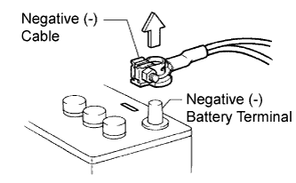 |
REMOVAL AND INSTALLATION OF BATTERY TERMINAL
Before performing electronic work, disconnect the cable from the negative (-) battery terminal to prevent component and wire damage caused by accidental short circuits.
When disconnecting the cable, turn the ignition switch off and the headlight dimmer switch OFF and loosen the cable nut completely. Perform these operations without twisting or prying the cable. Then disconnect the cable.
Clock settings, radio settings, audio system memory, DTCs and other data are erased when the cable is disconnected from the negative (-) battery terminal. Write down any necessary data before disconnecting the cable.
HANDLING OF ELECTRONIC PARTS
Do not open the cover or case of the ECU unless absolutely necessary. If the IC terminals are touched, the IC may be rendered inoperative by static electricity.
Do not pull the wires when disconnecting electronic connectors. Pull the connector.
| 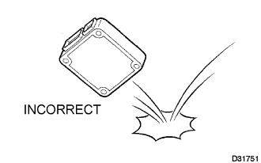 |
Be careful not to drop electronic components, such as sensors or relays. If they are dropped on a hard surface, they should be replaced.
When cleaning the engine with steam, protect the electronic components, air filter and emission-related components from water.
Never use an impact wrench to remove or install temperature switches or temperature sensors.
When measuring the resistance of a wire connector, insert the tester probe carefully to prevent terminals from bending.
| 4.REMOVAL AND INSTALLATION OF FUEL CONTROL PARTS |
PLACE FOR REMOVING AND INSTALLING FUEL SYSTEM PARTS
Work in a location with good air ventilation that does not have welders, grinders, drills, electric motors, stoves, or any other ignition sources.
Never work in a pit or near a pit as vaporized fuel will collect in those places.
REMOVING AND INSTALLING FUEL SYSTEM PARTS
Prepare a fire extinguisher before starting the operation.
To prevent static electricity, install a ground wire to the fuel changer, vehicle and fuel tank, and do not spray the surrounding area with water. Be careful when performing work in this area, as the work surface will become slippery. Do not clean up gasoline spills with water, as this may cause the gasoline to spread, and possibly create a fire hazard.
Avoid using electric motors, working lights and other electric equipment that can cause sparks or high temperatures.
Avoid using iron hammers as they may create sparks.
Dispose of fuel-contaminated cloth separately using a fire resistant container.
| 5.REMOVAL AND INSTALLATION OF ENGINE INTAKE PARTS |
 |
If any metal particles enter inlet system parts, they may damage the engine.
When removing and installing inlet system parts, cover the openings of the removed parts and engine openings. Use gummed tape or other suitable materials.
When installing inlet system parts, check that no metal particles have entered the engine or the installed parts.
| 6.HANDLING OF HOSE CLAMPS |
Before removing the hose, check the clamp position so that it can be reinstalled in the same position.
| 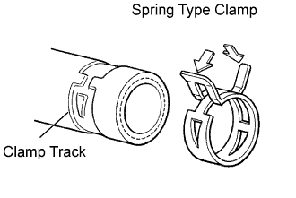 |
Replace any deformed or dented clamps with new ones.
When reusing a hose, attach the clamp on the clamp track portion of the hose.
For a spring type clamp, you may want to spread the tabs slightly after installation by pushing in the direction of the arrows as shown in the illustration.
| 7.FOR VEHICLES EQUIPPED WITH MOBILE COMMUNICATION SYSTEMS |
| 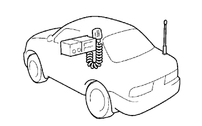 |
Install the antenna as far away from the ECU and sensors of the vehicle electronic systems as possible.
Install an antenna feeder at least 20 cm (7.87 in.) away from the ECU and sensors of the vehicle electronic systems. For details about ECU and sensor locations, refer to the section of the applicable components.
Keep the antenna and feeder separate from other wiring as much as possible. This will prevent signals from the communication equipment from affecting vehicle equipment and vice versa.
Check that the antenna and feeder are correctly adjusted.
Do not install a high-powered mobile communication system.
| 8.FOR VEHICLES EQUIPPED WITH VEHICLE STABILITY (VSC) SYSTEM |
| 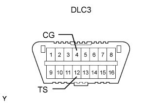 |
NOTICES WHEN USING DRUM TESTER
Before beginning testing, disable the VSC. To disable the VSC, turn the ignition switch OFF and connect SST to terminals TS and CG of the DLC3.
NOTICES OF RELATED OPERATIONS TO VSC
Do not carry out unnecessary installation and removal procedures as it might affect the adjustment of VSC related parts.
Be sure to follow the instructions for work preparation and final confirmation of proper operation of the VSC system.
| 9.WHEN SERVICING FULL-TIME 4WD VEHICLES |
| 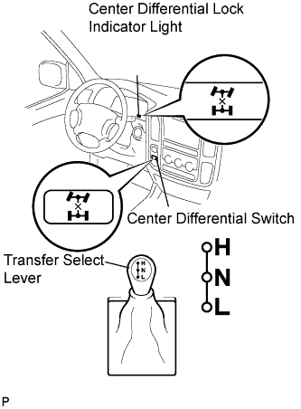 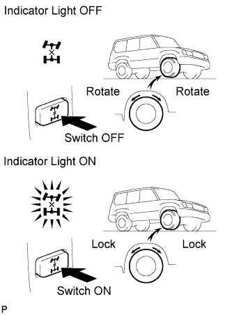 |
| Item | Condition | Wheel |
| Center differential switch | OFF | A lifted wheel cannot be rotated even if only one wheel is lifted up, as long as transmission is in N position |
| Indicator light | OFF | |
| Transfer select lever (H/L) | w/ VSC: H or L position w/o VSC: H position only |
| Item | Condition | Wheel |
| Center differential switch | ON | A lifted wheel cannot be rotated even if only one wheel is lifted up, as long as transmission is in N position |
| Indicator light | ON | |
| Transfer select lever (H/L) | H or L position |
| Item | Condition | Wheel |
| Center differential switch | ON | A lifted wheel cannot be rotated even if only one wheel is lifted up, as long as transmission is in N position |
| Indicator light | ON | |
| Transfer select lever (H/L) | H position | |
| Transfer select lever (H/L) | L position |
| 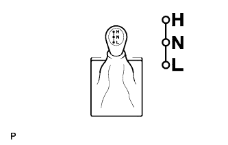 |
| 10.WHEN TESTING BRAKES, SPEEDOMETER, ETC. |
When carrying out any kind of servicing or testing on a Full-time 4WD in which the front or rear wheels are to be rotated (braking test, speedometer test), be sure to observe the precautions given below.
Incorrect preparations or test procedures may cause a hazard as well as unsuccessful test results.
Before starting any such servicing or test, be sure to check the following items:
| 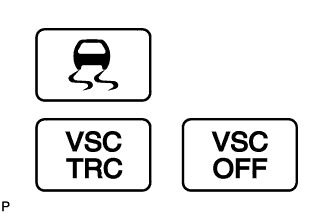 |
 |
Using Braking Tester:
Measure using a low-speed type (Vehicle Speed: Below 0.5 km/h or 0.3 mph) brake tester and observe the following instructions before performing the test.
Position the wheels to be tested (front or rear) on the tester.
Put the center differential in the FREE position.
If the vehicle is equipped with a Vehicle Stability Control (VSC) system, prohibit the system from activating (see previous step).
Shift the transmission shift lever to the "N" position.
| 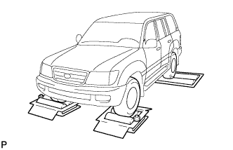 |
Using Speedometer Tester:
Observe the following instructions and then measure with the rear wheels.
Position the rear wheels on the tester roller.
Position the front wheels on the free roller or jack them up.
Put the center differential in the FREE position.
If the vehicle is equipped with a Vehicle Stability Control (VSC) & Traction Control (TRC) system, prohibit the system from activating (see previous step).
Ensure that the vehicle does not move using wires.
| 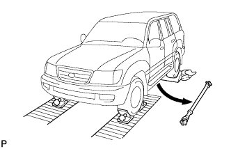 |
Using Chassis Dynamometer:
Observe the following instructions and then measure with the rear wheels.
Remove the front propeller shaft.
Put the center differential in the LOCK position.
If the vehicle is equipped with a Vehicle Stability Control (VSC) & Traction Control (TRC) system, prohibit the system from activating (see previous step).
Ensure that the vehicle is securely fixed in place.
| 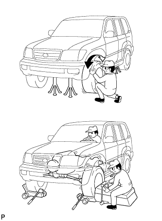 |
On-vehicle Wheel Balancing:
When doing on-vehicle wheel balancing on a full-time 4WD vehicle, to prevent each wheel from being rotated at a different speed and in different directions (which could damage the center differential), always be sure to observe the following precautions.
All 4 wheels should be jacked up / lifted off of the ground completely.
Put the center differential in the LOCK position.
If the vehicle is equipped with a Vehicle Stability Control (VSC) & Traction Control (TRC) system, prohibit the system from activating (see previous step).
The parking brake lever should be fully released.
None of the brakes should be applied.
The wheels should be driven on the wheel balancer with the engine running.
Carry out the wheel balancing with the transmission in the D position.
| 11.WHEN TOWING FULL-TIME 4WD VEHICLES |
| Towing Method | Parking Brake Condition | Transmission Shift Lever Position | |
| 1. Flat Bed Truck 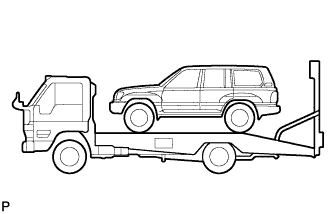 | Applied | Any Position | |
| 2. Wheel Lift Type Truck From Front 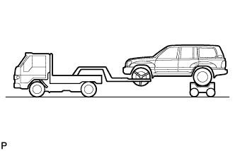 From Rear  | Applied | ||
| 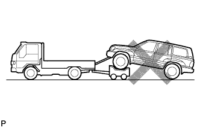 |
|
| 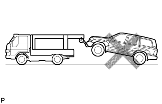 | Do not use the sling type method, either from the front or rear, as this method causes damage to the body. |
| 12.FOR VEHICLES EQUIPPED WITH CATALYTIC CONVERTER |
Use only unleaded gasoline.
Avoid idling the engine for more than 20 minutes.
Avoid performing unnecessary spark jump tests.
Perform a spark jump test only when absolutely necessary. Perform this test as rapidly as possible.
While testing, never race the engine.
Avoid a prolonged engine compression measurement. Engine compression measurements must be performed as rapidly as possible.
Do not run the engine when the fuel tank is nearly empty. This may cause the engine to misfire and create an extra load on the converter.